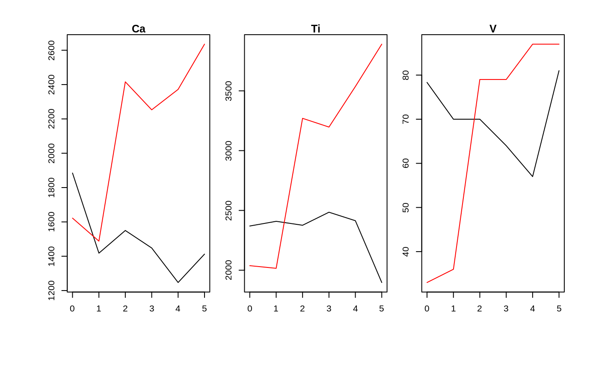
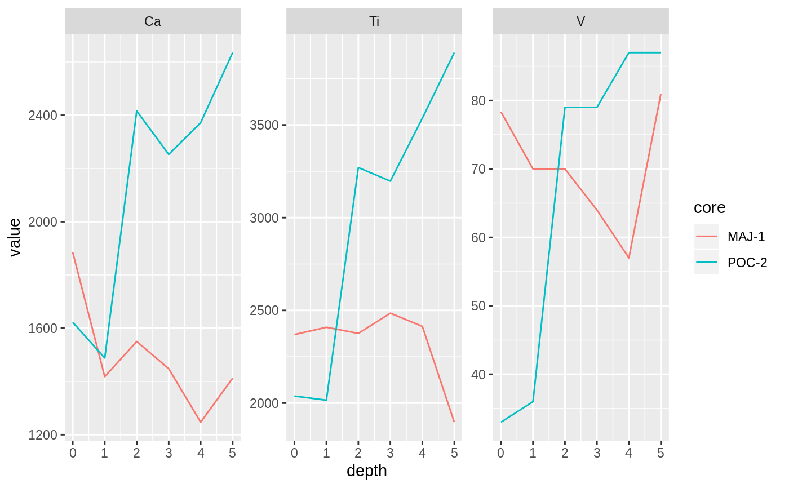

These functions are intended to quickly visualize plot a parameter-long data frame with a few variables that identify single rows in the value column. The function is optimised to plot data with a time axis data either horizontally (time on the x axis) or vertically (time on the y axis). Facets are intended to be by parameter, which is guessed based on the right-most discrete variable named in id_vars. In the context of a mudata object, this function almost always guesses the axes correctly, but these choices can be overridden.
long_ggplot(.data, ..., max_facets = 9, facet_args = list()) long_plot(.data, id_vars = NULL, measure_var = "value", x = NULL, y = NULL, facets = NULL, geom = "path", error_var = NULL, ..., max_facets = 9, facet_args = list(), scales = list()) long_plot_base(.data, id_vars = NULL, measure_var = "value", x = NULL, y = NULL, facets = NULL, geom = "path", error_var = NULL, ...)
| .data | A |
|---|---|
| ... | Additional aesthetic mappings, passed on to (or treated similarly to) aes_string |
| max_facets | Constrain the maximum number of facets, where available |
| facet_args | Passed on to facet_wrap |
| id_vars | Columns that identify unique rows |
| measure_var | Column that contains values to be plotted |
| x | Column to be used on the x-axis |
| y | Column to be used on the y-axis |
| facets | Column(s) to be used as facetting variable (using facet_wrap) |
| geom | Can be any combination of point, path, or line. |
| error_var | The column to be used for plus/minus error bars |
| scales | Customize aesthetic mapping in long_plot() |
#> #>#> #> #>#> #> #>#> #> #>pocmaj_long <- pocmajsum %>% select(core, depth, Ca, Ti, V) %>% gather(Ca, Ti, V, key = "variable", value = "value") long_plot(pocmaj_long, col="core")#>#>#>long_ggplot(pocmaj_long, col="core")#>#>#>